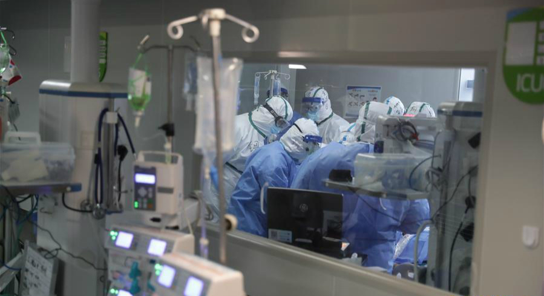
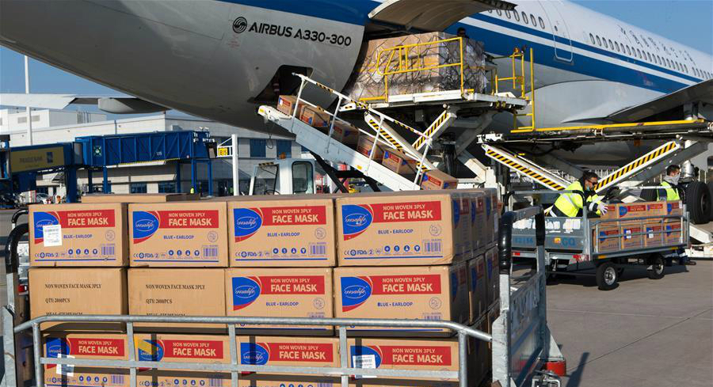

登录
注册
矿大抗疫
齐心抗疫，共克时艰！


央视快评
这场硬仗 习近平"再动员、再部署"
这个"重中之重" 习近平频频提及
世界卫生组织总干事:武汉零新增病例给世界以希望
中国专家医疗队受最高礼遇迎接 塞总统亲吻五星红旗
新冠肺炎康复者血浆捐献突破1000人次
抗疫故事助力思政课与新时代同频共振
经济恢复元气
全国金融系统1137人感染新冠肺炎，42人不幸去世
近50国宣布进入紧急状态 部分国家称"战时状态"
特朗普告诉医务人员:口罩可重复使用别扔 有很好的液体消毒
对所有欧洲入境者进行新冠病毒检测
央行副行长：目前断定全球进入金融危机还为时尚早
新闻速递
火神山雷神山医院滞汉参建工人将陆续返乡返岗
特警坚守一线 护卫生命通道
湖北武汉：多个长江大保护项目开工
独家画面！记者跟拍火神山血浆输注治疗全过程……
首个治疗新冠肺炎的中药获临床批件
张恩莉：争分夺秒 只为更多患者康复
病毒与人类长期共存 疾控体系是防御长城
办法总比困难多——首都复工复产一线见闻
香港国际机场暂停前往内地的转乘交通接驳服务
澳总理：美国是澳感染病例的最大来源 抗疫举措步步升级
意大利累计确诊超过5万例
全国停止非必要生产活动
更多新闻
新加坡禁止所有外国人入境或过境
湖北记者披露武汉新增100多例?官方辟谣:新增为0
卫健委:新增确诊46例 其中境外输入病例45例 湖北4日无新增
民航局:目的地为北京的国际航班需从指定入境点入境
北京新增境外输入确诊病例2例 为英国输入病例
湖北：新冠肺炎确诊贫困人口每人获补助1万元
张文宏：疫情夏天会经历低谷 冬天是否复发不好说
境外输入关联病例是啥？广州的解释来了
上海市卫健委：上海对非重点国家所有入境人员核酸检测